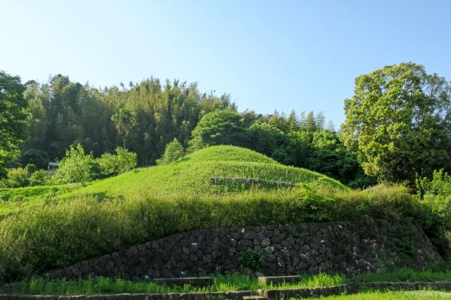
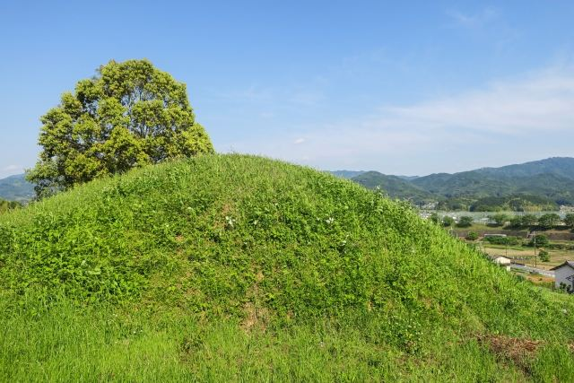

終末期古墳の特徴
7世紀末頃に築かれたと考えられる古墳で、飛鳥時代後期の墓制を知ることができます。

マルコ山古墳は、明日香村真弓にある7世紀末頃に築造された終末期古墳です。 六角形に近い墳丘を持つと考えられ、精巧な切石を用いた横口式石槨が特徴です。 天武・持統天皇陵などと同じ時代に築かれた古墳で、飛鳥時代の葬送文化を感じられる貴重な史跡です。
| 見学時間 | 自由見学 |
|---|---|
| 定休日 | なし |
| 料金 | 無料 |
| 所要時間 | 約10〜15分 |
| 駐車場 | 要確認 |
| アクセス |
近鉄飛鳥駅から徒歩約20分。 周辺は坂道がありますので歩きやすい靴がおすすめです。 |
| 地図 | 地図はこちら |

7世紀末頃に築かれたと考えられる古墳で、飛鳥時代後期の墓制を知ることができます。

周辺には天皇陵や古墳が点在し、飛鳥時代の歴史散策を楽しめる場所です。
マルコ山古墳は7世紀末から8世紀初頭頃に築造されたと考えられる終末期古墳です。 墳丘は六角形墳と考えられ、内部には凝灰岩を使用した横口式石槨が確認されています。 被葬者は明らかになっていませんが、当時の有力者の墓と考えられています。